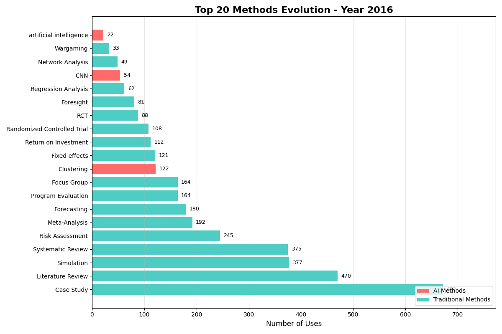
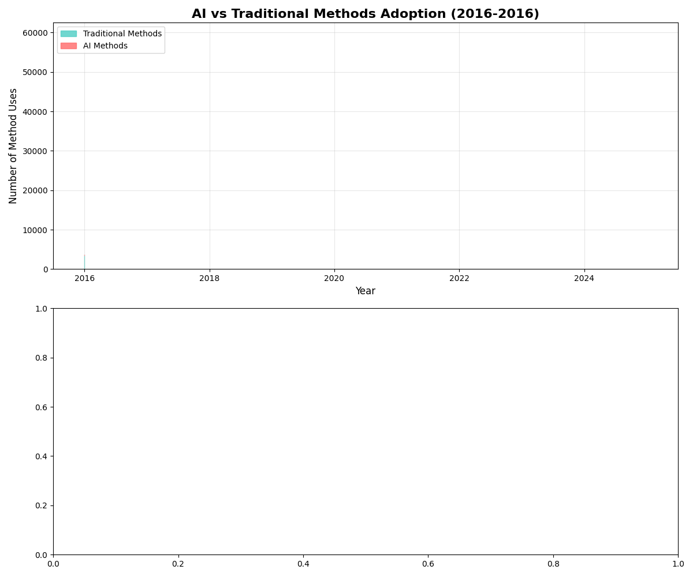
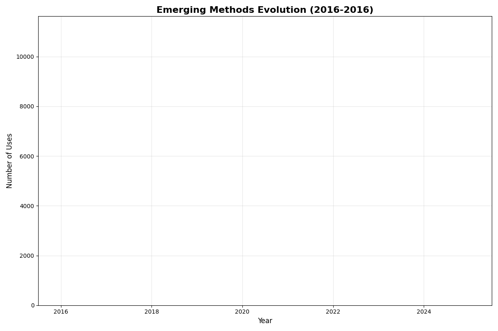

📋 Research Methodology
📊 Data Sources
- API Metadata: 48,876 publication records from RAND publications API
- Text Chunks: 564,062 document segments from AskRAND system
- Embeddings: Vector representations from AskRAND FAISS index
- Analysis Subset: 9,129 publications with full text available
- Time Period: January 2016 - December 2025
🔍 Method Detection Process
- Keyword Search: Automated text scanning for 231 method terms
- Text Chunking: Documents split into 564,062 analysis segments
- Frequency Counting: Occurrence tracking across all publications
- Deduplication: One count per method per document maximum
- Classification: Methods grouped into research categories
🤖 AI Methods vs. Keywords
- AI Methods: CNN, Deep Learning, Neural Networks (actual research techniques)
- AI Keywords: "artificial intelligence", "AI", "machine learning" (general terminology)
- Detection Method: Text pattern matching in document chunks
- Growth Calculation: Year-over-year usage frequency comparison
📈 Analysis Techniques
- Specialization Index: Research area method concentration vs. RAND-wide usage patterns
- Network Analysis: Author-method collaboration patterns
- Temporal Tracking: Method usage evolution over time
- Co-occurrence Analysis: Methods used together in publications
⚠️ Known Limitations
- Keyword-based detection may miss methods described without standard terms
- Some mentions may be literature references rather than active method use
- Method sophistication levels not systematically validated
- AI integration assessment based on keyword co-occurrence only
- No manual validation or expert review conducted for this analysis
What methods are being used by whom, and how is AI being used in those methods?
Analysis of RAND research publications from 2016-2025 using keyword detection across 564,062 text chunks. AI terminology mentions: 22 (2016) to 4,920 (2025).
LLM Integration Analysis (Preliminary Results)
⚠️ Preliminary Analysis Status
- Sample analyzed: 9,750 method instances from 564,062 total chunks (1.7%)
- LLM analysis: Each text chunk containing AI terminology was analyzed by an LLM to determine usage context
- Full analysis: Currently ~65% complete with additional records being processed
- Note: Results below are from preliminary sample, not the complete dataset
🔍 Method Usage Types
- Background (44.2%): Methods mentioned in literature context
- Citation (26.8%): References to previous work using methods
- Active Usage (18.7%): Methods actually employed in research
- Mixed Categories (10.3%): Multiple usage patterns detected
🎯 Method Sophistication Levels
- Basic (51.6%): Simple application or mention
- None/Minimal (33.4%): Limited methodological detail
- Moderate (14.4%): Substantive methodological implementation
- Advanced (0.6%): Sophisticated or novel application
🤖 LLM Integration Status
- No LLM Integration (98.7%): Traditional method usage
- LLM-Assisted (0.8%): LLM tools support method implementation
- LLM-Augmented (0.6%): LLMs fundamentally enhance methodology
📊 Key Insights
- Limited LLM Integration: Only 1.3% of methods show LLM integration
- Mostly Background Usage: 71% are references vs. active usage
- Basic Implementation: 85% show basic/minimal sophistication
- Analysis Ongoing: Full results will provide complete picture
Interpretation Note: These results suggest that while AI terminology has grown rapidly (as shown in temporal charts), actual LLM integration into research methods remains limited. Most AI mentions appear in background literature rather than active methodological implementation.
📊 Method Categories
Publication Patterns (2016-2025)
- Total Publications: 9,129 documents
- Annual Average: 913 publications/year
- Peak Year: 2023 (1,520 publications)
- Methods per Document: 25.3 average
- Text Chunks Analyzed: 564,062
Frequency Tiers
- Tier 1 - Very High (15,000+ uses): 7 methods
Case Study (43,807), Simulation (34,095), Literature Review (30,719) - Tier 2 - High (5,000-15,000): 14 methods
Risk Assessment, Forecasting, Focus Group, Meta-Analysis - Tier 3 - Moderate (1,000-5,000): 58 methods
Mixed-Methods, GIS, Content Analysis - Tier 4 - Low (100-1,000): 89 methods
- Tier 5 - Rare (<100): 63 methods
Core Method Categories
- Evaluation Methods: Program Evaluation, Process Evaluation, Outcome Evaluation, Impact Assessment
- Statistical Methods: Fixed Effects, Regression Analysis, Difference-in-differences, Causal Inference
- Review Methods: Literature Review, Systematic Review, Meta-Analysis
- Data Collection: Case Study, Focus Group, Survey Design, Expert Elicitation
- Applied Analysis: Risk Assessment, Forecasting, Simulation, Wargaming
AI Keywords/Terminology Growth
- 2016: 22 mentions of "artificial intelligence" keyword in text chunks
- 2025: 4,920 mentions of "artificial intelligence" keyword in text chunks
- What this represents: Frequency of AI terminology appearing in RAND document text, not method usage
- AI Keywords: "Artificial Intelligence" (30,591), "AI", "Machine Learning" (general terms)
- Actual AI Methods: CNN (9,057), Deep Learning (3,448), Neural Networks (2,041)
Key Findings
📊 Method Usage Landscape
- Case Study leads with 43,807 uses
- Literature Review: 39,101 uses
- Multi-author documents: 67.3% (definition: documents with >1 author listed)
- Platform methods span all divisions
🤖 AI Terminology Growth
- AI term mentions: 31.4% of all method mentions (2025)
- Up from 5.4% in 2016 (22,364% increase)
- Actual AI Methods: CNN (9,057), Deep Learning (3,448), Neural Networks (2,041)
- Note: "Artificial Intelligence" is terminology, not a method
🏢 Research Area Analysis (Data Quality Issues)
- Research area identification: Based on automated classification, not validated against official RAND structure
- Example specializations: Health Care: Clinical methods (Index 15.31), Education: Econometric Analysis (Index 8.36)
- Data contamination: Some "methods" are actually RAND centers (e.g., "Center for Gaming")
- Note: Categories are descriptive for analysis purposes, not official RAND organizational units
Traditional Research Methods
Core research methods used across RAND publications, excluding AI-related techniques.
Evaluation Methods
- Case Study: 43,807 uses - Most frequent method across RAND
- Program Evaluation: 8,668 uses
- Process Evaluation: 5,045 uses
- Outcome Evaluation: 4,613 uses
Statistical Methods
- Fixed Effects: 8,454 uses
- Regression Analysis: 5,598 uses
- Statistical Analysis: 5,163 uses
- Sensitivity Analysis: 4,787 uses
Review Methods
- Literature Review: 30,719 uses - Second most frequent
- Systematic Review: 22,891 uses
- Meta-Analysis: 14,534 uses
Applied Methods
- Simulation: 34,095 uses - Third most frequent
- Risk Assessment: 17,381 uses
- Forecasting: 15,027 uses
- Focus Group: 14,625 uses
Analytical Methods
- Network Analysis: 6,697 uses
- Clustering: 6,057 uses
- GIS (Geographic Information Systems): 3,183 uses
- Content Analysis: 2,645 uses
AI Research Methods
Actual AI research techniques used as methods in RAND publications.
Machine Learning Methods
- CNN (Convolutional Neural Network): 9,057 uses
- Deep Learning: 3,448 uses
- Neural Network: 2,041 uses
- RL (Reinforcement Learning): 2,384 uses
- LLM (Large Language Model): 2,922 uses
- GPT: 2,548 uses
AI-Specific Techniques
- Fine-tuning: 1,513 uses
- Embedding: 4,452 uses
- GAN (Generative Adversarial Network): 1,910 uses
- Transformer: 1,463 uses
AI Terminology & Keywords
General AI terms mentioned in RAND publications - not research methods themselves.
AI Terminology Growth
Chart needs to be fixed: Current visualization shows flat line - should show exponential growth from 22 (2016) to 4,920 (2025) mentions.
Publications Per Year
Chart needs to be generated: Will show RAND publication counts by year from API metadata (48,876 total publications).
General AI Terms
- "Artificial Intelligence": 30,591 mentions (general field reference)
- "Machine Learning": Frequently mentioned as concept
- "AI": Abbreviation usage throughout documents
AI Technology Terms
- "Embedding": 4,452 mentions (data representation technique)
- "LLM": 2,922 mentions (Large Language Model)
- "GPT": 2,548 mentions (specific AI model)
Research Area Specializations
⚠️ Research Area Classification Methodology
- Method: Documents classified into research areas using keyword matching against titles/abstracts (e.g., "health", "medical" → Health Care research area)
- Keywords used: 11 research area categories with 5-15 keywords each (AI, defense, education, health, etc.)
- Specialization Index: Measures how concentrated specific methods are within each research area compared to RAND-wide usage
- Calculation: (Method usage % in research area) ÷ (Method usage % across all RAND) = Specialization Index. Values >1.5 indicate strong specialization
- Note: Research area names are descriptive categories, not official RAND organizational units
Research Area Method Specializations

Heatmap showing method specialization patterns across RAND research areas. Darker colors indicate stronger specialization (higher Specialization Index values) where specific methods are used more intensively within particular research areas compared to RAND-wide averages.
Temporal Evolution
Top Methods Race (2016-2025)
Watch how method rankings evolve over time, with AI methods rising rapidly.
AI Keywords vs Traditional Methods
The growing share of AI terminology mentions in RAND publications.
Emerging Methods by Frequency
Methods gaining frequency over time, with AI-related terms leading growth.
Method Growth Heatmap
Issue: AI Method Penetration chart shows all zeroes - data needs to be recalculated with proper AI method categorization.
Interactive Explorations
Enhanced WizMap Network
Interactive visualization of RAND research methods and their relationships using semantic embeddings and network analysis.
Launch WizMap →Detailed Reports & Data
💾 Download Data
Access raw data files for further analysis: